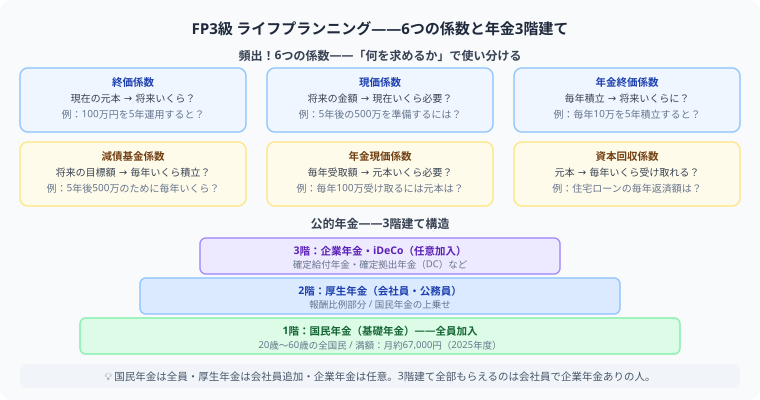

FP3級 ライフプランニングと資金計画
6つの係数を例題で使ってみる
この記事でわかること（5秒まとめ）
- 6つの係数は「現在→将来」か「将来→現在」かの方向で3ペアに分けると覚えやすい
- 2026年度の国民年金保険料は月額17,920円、老齢基礎年金満額は月額70,608円
- 年金は3階建て構造——国民年金→厚生年金→企業年金の順に積み上がる
- 係数の使い分けは実際に計算すると一気に定着する
大谷 一輝 より
こんにちは、大谷です！
6つの係数、名前だけ見ると「終価係数？現価係数？減債基金係数？」と混乱必至なんですが、実際に数字を当てはめて計算してみると、驚くほどすんなり頭に入ります。今日は名前の暗記より先に、使う場面と計算例から入ってみましょう！
また、記事の末尾のほうにある【いいねボタン】をポチッと押してもらえると、めちゃくちゃ嬉しいです！
受験生
6つの係数、名前が似ていて全部ごちゃごちゃになります……どう覚えればいいですか？
大谷（簿記1級勉強中）
3ペアに分けると整理できます。①終価係数⇔現価係数（一括のお金を将来⇔現在に換算）、②年金終価係数⇔減債基金係数（積立に関する係数）、③年金現価係数⇔資本回収係数（受け取り・取り崩しに関する係数）。ペアの片方は「将来にする」係数、もう片方は「現在に戻す」係数と考えると方向がわかりやすいです。
受験生
「減債基金係数」ってどういう場面で使うんですか？名前からイメージが湧きません。
大谷（簿記1級勉強中）
「10年後に300万円貯めたい。毎年いくら積み立てればいい？」という場面で使います。目標金額×減債基金係数＝毎年の積立額、という式です。「将来の目標から、今年いくら積むべきかを逆算する」係数と覚えると使い道がイメージしやすいですよ。
❓ 6つの係数——3ペアで整理する
6つの係数は「現在のお金を将来にする」か「将来のお金を現在に換算する」かの方向で整理すると覚えやすくなります。

| 係数 | 使う場面 | 方向 |
|---|---|---|
| 終価係数 | 今のお金が将来いくらになるか | 現在→将来 |
| 現価係数 | 将来必要な額を今いくら用意すればよいか | 将来→現在 |
| 年金終価係数 | 毎年積み立てたら将来いくらになるか | 現在（積立）→将来 |
| 減債基金係数 | 将来の目標額のため毎年いくら積み立てるか | 将来（目標）→現在（積立額） |
| 年金現価係数 | 毎年一定額を受け取るには今いくら必要か | 将来（受取）→現在（元本） |
| 資本回収係数 | 今ある元本から毎年いくら受け取れるか | 現在（元本）→将来（受取） |
📝 減債基金係数を例題で使ってみる
例題
10年後に300万円を貯めたい。年利2%で複利運用する場合、毎年の積立額はいくら必要か（10年・年利2%の減債基金係数を0.0913とする）。
毎年の積立額 ＝ 目標金額 × 減債基金係数
＝ 300万円 × 0.0913 ＝ 約27.4万円/年
＝ 300万円 × 0.0913 ＝ 約27.4万円/年
このように、「将来の目標額」から「毎年いくら積み立てるべきか」を逆算するのが減債基金係数の役割です。試験では係数表が与えられるので、係数の意味と掛け算の向きさえ間違えなければ得点できます。
💰 年金は3階建て構造
| 階層 | 制度 | 加入対象 |
|---|---|---|
| 1階 | 国民年金（基礎年金） | 20歳以上60歳未満の全国民 |
| 2階 | 厚生年金 | 会社員・公務員等 |
| 3階 | 企業年金・iDeCo等 | 制度がある企業の従業員、任意加入者 |
2026年度の数字：国民年金保険料は月額17,920円、老齢基礎年金の満額は月額70,608円（年847,300円）です。全員が1階（国民年金）から始まり、会社員・公務員はその上に2階（厚生年金）が上乗せされます。
🏠 住宅ローン・教育資金の頻出ポイント
| テーマ | 見るポイント |
|---|---|
| 住宅ローン | 固定金利、変動金利、フラット35（全期間固定・住宅金融支援機構との提携） |
| 団体信用生命保険 | 契約者が死亡・高度障害になった場合、以後のローン残債が保険金で完済される仕組み |
| 教育資金 | 教育ローン、奨学金、必要資金の見積もり |
よくあるミス：健康保険と国民健康保険、国民年金と厚生年金、教育ローンと奨学金を混同しやすいです。似た制度は、対象者とお金の流れを表にして比較すると覚えやすくなります。
📋 まとめ：ライフプランニング・資金計画 早見表
6つの係数終価・現価／年金終価・減債基金／年金現価・資本回収の3ペア
国民年金保険料（2026年度）月額17,920円
老齢基礎年金満額（2026年度）月額70,608円（年847,300円）
年金の構造国民年金（1階）→厚生年金（2階）→企業年金等（3階）